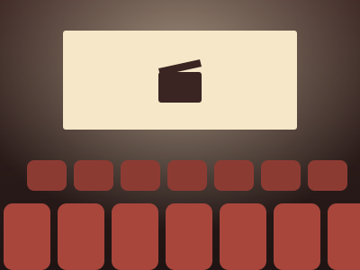

Ingénierie Financière
Ingénierie Financière
Le gap financing, ou l'art de combler le dernier trou
Exemple
Ingénierie Financière
Exemple
Exemple

Études de casExemple
Aucun article dans cette catégorie pour le moment.
Édito · Ma vision
Derrière chaque film qui arrive en salle, il y a un montage financier aussi minutieux que son montage image : préventes, crédits d'impôt, soutiens publics, coproductions internationales, gap financing… Ce carnet est l'endroit où je décortique ces mécanismes.
J'y consigne mes lectures, mes modèles, mes hypothèses et mes études de cas, avec une conviction : comprendre comment un film se finance, c'est comprendre pourquoi il existe.
— Carnet ouvert le 1er octobre 2026